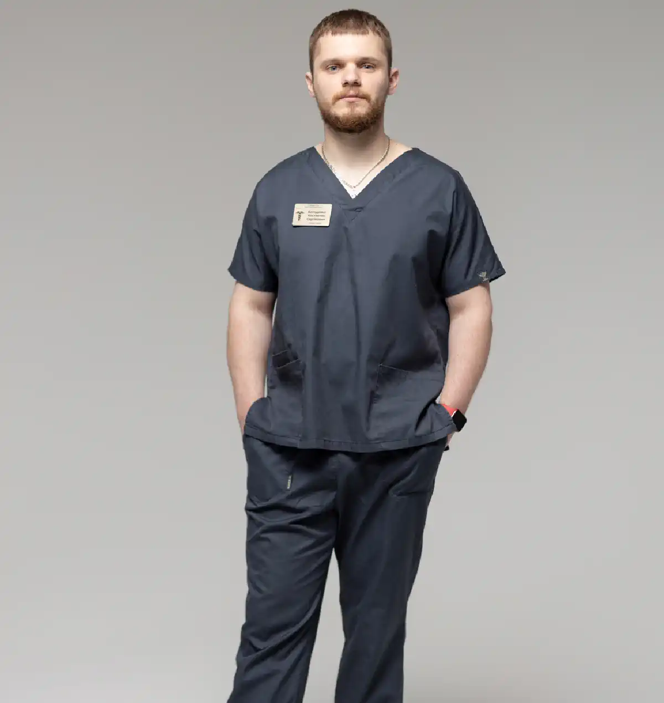

+38(068) 79 72 782
+38(068) 79 72 782Кодування від алкоголізму Київ
Кодування – крок до тверезого життя!


Безкоштовна консультація, працюємо цілодобово 24/7
Кодування – крок до тверезого життя!
Алкогольна залежність — це глибока, системна проблема, і чим довше вона залишається без втручання, тим сильніше людина занурюється в стан, коли контроль над власним життям поступово втрачається. У такі моменти важливо мати можливість опертися на метод, який здатний зупинити руйнівний процес і дати організму перепочинок. Саме тому кодування від алкоголізму в Києві сприймається багатьма як реальна можливість вирватися із замкнутого кола постійного вживання та подальших спроб «зав’язати».
Кодування не просто знижує бажання вживати спиртне — воно формує нову точку опори, створює внутрішній і зовнішній бар’єр, який дозволяє людині отримати час і сили для відновлення. У цей період у пацієнта з’являється шанс заново налагодити сон, покращити фізичне самопочуття, нормалізувати емоційний фон і поступово повернути собі ясність мислення. Завдяки відсутності нав’язливої тяги до алкоголю, людина здатна тверезо оцінювати ситуацію і робити усвідомлені кроки до зміни власного життя.
Крім того, кодування стає важливим психологічним етапом. Багато пацієнтів відзначають, що після процедури з’являється почуття відповідальності та мотивації — людина починає усвідомлювати, що зробила серйозний крок заради свого майбутнього. Це допомагає зміцнити внутрішній настрій, побороти страхи і знову відчути впевненість у власних силах. Особливо важливо, що кодування відкриває можливість для комплексної терапії: консультацій психотерапевта, роботи з емоційними травмами, відновлення соціальних і сімейних зв’язків. Такий підхід дозволяє не просто досягти тимчасової тверезості, а поступово сформувати стійкий стан, за якого людина вчиться жити без алкоголю, відновити здоров’я, повернути гармонію у стосунках і відчути себе повноцінним, вільним і керованим майбутнім.
Кодування від алкоголізму — це не просто разова процедура, а важливий етап у цілому комплексі лікувальних заходів, спрямованих на відновлення здоров’я і психоемоційного стану людини. Воно дає можливість пацієнту на певний час «відключити» руйнівні механізми залежності та почати заново будувати життя без спиртного. Важливо розуміти, що цей метод працює особливо ефективно, коли людина сама прагне до змін і усвідомлює необхідність лікування.
Дуже важливо, що кодування допомагає створити тимчасове «вікно можливостей». У цей період пацієнт може пройти додаткові консультації, зайнятися роботою з психологом, відновити нормальний режим сну, зміцнити здоров’я і поступово адаптуватися до життя без алкоголю. Процедура допомагає не тільки подолати фізичну тягу, але й усвідомити глибинні причини залежності, навчитися справлятися зі стресом без вживання спиртного і відновити втрачену довіру близьких. У довгостроковій перспективі кодування стає важливою опорою для людини, і якщо його поєднувати з підтримкою родичів, психотерапією і зміною звичок, ймовірність стійкої тверезості значно зростає.
Кодування від алкоголізму — це не просто медична процедура, а повноцінна комплексна підтримка на шляху до тверезості, яка враховує фізичні, психологічні та соціальні аспекти залежності. Пацієнт отримує не лише блокування тяги до алкоголю, але й детальні індивідуальні рекомендації щодо подальшого відновлення, постійний супровід фахівців, а при необхідності — інтеграцію в комплексну програму лікування та реабілітації. Такий підхід дозволяє не просто тимчасово відмовитися від спиртного, а дійсно змінити спосіб життя, покращити фізичне та психічне здоров’я, повернути стабільність, емоційний баланс і контроль над власними діями.
Під час всього процесу кодування пацієнт отримує підтримку на кожному етапі: від первинної підготовки та вибору оптимального методу кодування до постпроцедурного спостереження, контролю стану та корекції лікування за необхідності. Фахівці відстежують прояви тяги до алкоголю, своєчасно коригують терапію і надають практичні поради щодо профілактики зривів, формують індивідуальні стратегії підтримання тверезості і створюють безпечне середовище для відновлення. Важливою складовою процесу є психологічна підтримка. Спеціалісти допомагають пацієнту усвідомити глибинні причини залежності, зрозуміти свої емоції та реакції, навчитися контролювати імпульси і справлятися зі стресом без алкоголю. Пацієнт опановує нові здорові звички, набуває навичок саморегуляції та виробляє ефективні стратегії поведінки у складних ситуаціях, що значно підвищує шанси на довготривале одужання і зниження ризику рецидиву.
Кодування також сприяє відновленню впевненості у власних силах, поверненню контролю над життям і можливості будувати нові соціальні зв’язки. Пацієнт починає активніше взаємодіяти з родиною та близькими, покращує особисті та професійні відносини, отримує мотивацію для участі в суспільному та професійному житті. Він вчиться планувати свій день, встановлювати реальні цілі, а також відчуває внутрішню свободу від постійного психологічного тиску залежності. Це не просто лікування, а комплексний шлях до відновлення фізичного, психічного і соціального здоров’я, який закладає основу для тривалого успіху та стабільної тверезості.
| Кодування від алкоголізму Київ | Ціна |
|---|---|
| Ін’єкція препарату Дисульфірам (3 місяці) | Від 4000 грн |
| Ін’єкція препарату Дисульфірам (6 місяців) | Від 6000 грн |
| Ін’єкція препарату Дисульфірам (12 місяців) | Від 8000 грн |
| Ін’єкція препарату Еспераль (6 місяців) | Від 6000 грн |
| Ін’єкція препарату Еспераль (12 місяців) | Від 8000 грн |
| Ін’єкція препарату Тетолонг (6 місяців) | Від 8000 грн |
| Ін’єкція препарату Тетолонг (12 місяців) | Від 12000 грн |
| Ін’єкція препарату Вівітрол (12 місяців) | Від 12000 грн |
| Ін’єкція препарату Аквілонг (12 місяців) | Від 12000 грн |
| Авторське трьохетапне кодування уколом (1-5 років) | Від 12000 грн |
| Розкодування від алкоголізму (уколу) | Від 6000 грн |
| Хірургічне кодування від алкоголізму Київ | Ціна |
|---|---|
| Імплантація (підшивка) капсули Еспераль (12 місяців) | Від 10000 грн |
| Імплантація (підшивка) капсули Еспераль (18 місяців) | Від 12000 грн |
| Імплантація (підшивка) капсули Еспераль (24-36 місяців) | Від 15000 грн |
| Імплантація (підшивка) гелю Дисульфірам (12 місяців) | Від 10000 грн |
| Імплантація (підшивка) гелю Дисульфірам (18 місяців) | Від 12000 грн |
| Імплантація (підшивка) гелю Дисульфірам (24-36 місяців) | Від 15000 грн |
| Розкодування від алкоголізму (хірургічно) | Від 8000 грн |
| Психотерапевтичне кодування від алкоголізму Київ | Ціна |
|---|---|
| Кодування за методом Довженка (1-5 років) | Від 10000 грн |
| Кодування гіпнозом (1-5 рік) | Від 10000 грн |
| Авторське кодування від алкоголізму гіпнозом (5 років) | Від 12000 грн |
| Трьохетапне кодування від алкоголізму гіпноз + метод Довженка (5-10 років) | Від 20000 грн |
| Психофармакологічне кодування від алкоголізму (1-5 років) | Від 20000 грн |
| Кодування від алкоголізму лазером | Від 10000 грн |
| Таблетоване кодування від алкоголізму | Ціна |
|---|---|
| Кодування від алкоголізму Еспераль таблетки | Від 1400 грн |
| Кодування від алкоголізму Тетурам таблетки | Від 1400 грн |
| Кодування від алкоголізму Дисульфірам таблетки | Від 1400 грн |
| Кодування від алкоголізму Краплі Мідзо | Від 1400 грн |
Найбільш популярним і ефективним методом медикаментозного кодування є кодування від алкоголізму уколом. Ця процедура займає всього кілька хвилин, але її дія здатна радикально змінити життя людини, створюючи в організмі тривалу захист від вживання алкоголю. Завдяки введенню спеціальних препаратів формується стійкий фізіологічний бар’єр, який блокує можливість отримання звичного «алкогольного ефекту» та викликає різко негативну реакцію при спробі випити. Саме тому цей метод вважається одним із найрезультативніших і найбільш затребуваних у клінічній практиці.
Ефективність уколу полягає в тому, що препарат починає працювати практично одразу після введення, накопичуючись в організмі й забезпечуючи тривалий захисний ефект. Залежно від обраного засобу, дозування та індивідуальних особливостей пацієнта тривалість дії може варіюватися від кількох місяців до року і більше. Це дозволяє людині спокійно проживати тривалий період без алкоголю, відновлювати здоров’я, повертати емоційну стабільність і поступово формувати нові звички, не пов’язані з вживанням спиртного. Процедура кодування уколом особливо цінується за свою простоту й доступність. Вона не потребує тривалої підготовки, довгого перебування в клініці чи складних маніпуляцій. Лікар проводить попередню діагностику, переконується у відсутності алкоголю в крові пацієнта і лише потім виконує ін’єкцію. Це робить метод ідеальним для тих, хто хоче отримати швидкий і надійний результат, не відволікаючись від повсякденного життя та роботи. Важливо підкреслити, що препарати для уколу відрізняються високим ступенем безпеки за умови, що процедура виконується кваліфікованим лікарем-наркологом і з дотриманням усіх медичних норм. Спеціаліст враховує стан пацієнта, можливі протипоказання, переносимість компонентів і обирає оптимальну форму та дозування засобу. Такий індивідуальний підхід мінімізує ризики та гарантує стабільний терапевтичний ефект.
Кодування уколом також дає людині психологічний комфорт. Розуміння того, що в організмі діє сильний препарат, який зробить уживання алкоголю небезпечним і вкрай неприємним, допомагає втриматися від зривів. У пацієнта з’являється можливість тверезо поглянути на своє життя, відновити довіру оточення, нормалізувати емоційний фон і зміцнити внутрішню мотивацію до подальшого лікування.
Ефективність цього методу ґрунтується на швидкій і прямій дії препарату. Лікар вводить медикамент внутрішньовенно або внутрішньом’язово, що забезпечує його практично миттєве поширення по організму й початок роботи вже в перші хвилини після процедури. Такий спосіб доставки дозволяє препарату впливати на біохімічні процеси, пов’язані з переробкою алкоголю, і формувати стійкий фізіологічний блок, який робить уживання спиртного не просто небажаним, а небезпечним для самопочуття. Після введення препарату організм реагує на будь-яку дозу алкоголю сильнішим негативним ефектом — людина починає відчувати жар, нудоту, відчуття нестачі повітря, стрибки тиску, тремтіння, слабкість. Ці реакції слугують серйозним застереженням: навіть думка про те, щоб випити, викликає настороженість і внутрішній опір. Такий фізіологічний механізм забезпечує потужний захист від випадкових або емоційно обумовлених зривів.
Додатковою перевагою цього методу є і його психологічна складова. Коли пацієнт знає, що в його організмі діє препарат, який у разі вживання алкоголю спричинить тяжкі наслідки, це зміцнює його власну рішучість відмовитися від спиртного. Багато пацієнтів зазначають, що страх перед можливою реакцією організму допомагає їм легше долати спокуси й упевнено триматися обраного курсу тверезості. Таким чином, медикаментозне кодування працює одразу у двох напрямках — фізіологічному та психологічному, що робить його значно ефективнішим за звичайну силу волі. Тривалість дії препарату лікар підбирає індивідуально, орієнтуючись на стан здоров’я, тривалість залежності, попередній досвід лікування та особисті цілі пацієнта. Комусь потрібна короткочасна підтримка на 6–12 місяців, щоб пройти первинну адаптацію до тверезого життя, зміцнити самоконтроль і стабілізувати емоційний фон. Іншим необхідний більш тривалий період захисту — на 1,5–3 роки, особливо якщо йдеться про тяжку або тривалу форму залежності. Такий гнучкий підхід дозволяє досягти максимального результату без ризику перевантажити організм або, навпаки, недоотримати необхідну підтримку.
Крім того, протягом усього періоду дії препарату у пацієнта з’являється унікальна можливість відновити здоров’я й поступово повертати собі повноцінне життя. Він може зайнятися лікуванням внутрішніх органів, пройти детоксикацію, налагодити сон, знизити рівень тривожності, навчитися новим стратегіям боротьби зі стресом. Кодування фактично дає людині «часовий коридор», протягом якого вона захищена від алкоголю і може спокійно, без тиску та спокус, працювати над собою.
Багато пацієнтів, які шукають вихід із залежності, запитують про «найсильнішу» кодировку від алкоголізму. Насправді сила й надійність кодування полягають не в дозуванні, а в його комплексності. Найнадійніший і довготривалий ефект досягається тоді, коли медикаментозний вплив поєднується з професійною психологічною підтримкою.
Медикаментозний бар’єр — це потужний інструмент, який дає вам найцінніше: час. Усуваючи фізичну тягу до алкоголю, він надає можливість зосередитися на головному завданні — роботі над собою. Саме в цей період тверезості починається справжня боротьба із залежністю, яка ведеться на психологічному рівні. Таким чином, медикаментозне кодування слугує надійним фундаментом, а робота з психологом і групова терапія допомагають побудувати на цьому фундаменті нове, здорове й повноцінне життя. Саме такий підхід забезпечує найбільш надійний і тривалий результат, роблячи кодировку по-справжньому «сильною».
Ні, закодувати п’яну людину категорично не можна. Це не тільки неефективно, але й вкрай небезпечно для її життя та здоров’я. Препарати, які використовуються для кодування, вступають у потужну взаємодію з алкоголем, який ще знаходиться в організмі, викликаючи негайну й украй тяжку реакцію відторгнення. Цей стан може призвести до критичних наслідків: різкого стрибка артеріального тиску, сильної блювоти, судом і навіть повного колапсу серцево-судинної системи. Спроба провести процедуру в стані сп’яніння — це прямий шлях до серйозних ускладнень, які можуть коштувати життя. Крім того, найважливішою умовою для кодування є усвідомлена згода пацієнта на лікування. Людина, що перебуває під дією алкоголю, не здатна приймати зважені рішення і розуміти всі ризики. Тому будь-який професійний нарколог спочатку переконається в повній тверезості пацієнта та його щирому бажанні пройти процедуру, перш ніж приступати до лікування. Відмова закодувати п’яну людину — це не відмова в допомозі, а прояв найвищого професіоналізму і турботи про її безпеку.
Для безпечного й ефективного проведення процедури кодування вкрай важливо дотримуватися всіх рекомендацій лікаря, і головним етапом підготовки є повне утримання від алкоголю мінімум протягом 3–5 днів. Це правило не можна ігнорувати чи скорочувати, оскільки воно безпосередньо впливає на безпеку пацієнта і результат лікування. Це не просто формальна рекомендація — це ключовий, критично важливий елемент підготовки, який забезпечує правильну роботу препарату. Алкоголь виводиться з організму не миттєво: його метаболіти можуть зберігатися в крові, печінці, тканинах і продовжувати впливати на хімічні процеси ще тривалий час. Якщо під час кодування в організмі пацієнта залишаються сліди етанолу, введений препарат може вступити з ним у реакцію, викликавши тяжкі симптоми — різке погіршення самопочуття, інтоксикацію, порушення дихання, стрибки тиску, панічні напади або колапс. Тому досвідчені наркологи ніколи не проводять процедуру, якщо мають навіть мінімальні підозри на наявність алкоголю в крові. Строге дотримання періоду утримання гарантує, що організм повністю очистився, а значить, препарат почне працювати так, як задумано. Він буде формувати захисний бар’єр поступово й рівномірно, без ризику побічних реакцій або ускладнень. Це робить саме кодування безпечним, передбачуваним і максимально ефективним для пацієнта.
Також важливо розуміти, що ці 3–5 днів — не просто технічна підготовка, а й перші кроки до тверезості. Людина починає поступово виходити із залежності, відновлюється робота нервової системи, покращується сон, знижується рівень інтоксикації. Організм отримує можливість нормалізувати обмін речовин, активізувати захисні механізми й підготуватися до взаємодії з препаратом. Цей період допомагає пацієнту психологічно налаштуватися на процедуру, зміцнити свою мотивацію і усвідомити важливість майбутнього етапу лікування. Дотримання всіх рекомендацій лікаря — запорука успішного й безпечного кодування. Чим відповідальніше пацієнт ставиться до підготовки, тим вища ефективність лікування, тим чистіше й спокійніше проходить період адаптації, і тим більше шансів на тривалу й стійку тверезість.
При медикаментозному кодуванні використовується препарат на основі дисульфіраму, який створює в організмі потужний фізіологічний бар’єр, ефективно блокуючи можливість уживання спиртного. Препарат втручається в процеси метаболізму алкоголю і зупиняє його розщеплення на безпечні компоненти. У результаті в крові миттєво накопичуються токсичні продукти розпаду, що й викликає тяжку реакцію при спробі випити. Такий механізм робить сумісність алкоголю і препарату абсолютно неможливою і надзвичайно небезпечною. Якщо пацієнт порушує умови кодування і вживає навіть невелику кількість спиртного, реакція розвивається практично миттєво. Вона супроводжується різкою інтоксикацією: з’являється сильна нудота, рясна блювота, запаморочення, утруднене дихання, відчуття жару або, навпаки, ознобу. Прискорене серцебиття, стрибки артеріального тиску, відчуття нестачі повітря і панічний страх створюють украй тяжкий стан, який людина запам’ятовує надовго. Саме це й формує міцний умовний рефлекс, який стає ключовим елементом успішного лікування — уживання алкоголю починає асоціюватися не з розслабленням, а з серйозною загрозою для самопочуття й життя.
Цей ефект працює не лише на фізіологічному, але й на психологічному рівні. Пацієнт, знаючи, що спроба вживання алкоголю може призвести до тяжких наслідків, починає ставитися до спиртного з настороженістю і внутрішнім спротивом. Таке «психологічне підкріплення» посилює мотивацію до тверезості, допомагає легше уникати ситуацій, пов’язаних з алкоголем, і знижує ймовірність зривів. Людина отримує можливість зосередитися на відновленні, поверненні до нормального життя, роботі над емоційною стабільністю і зміцненні соціальних зв’язків. Важливо зазначити, що дія дисульфіраму дозволяє створити безпечний період, протягом якого пацієнт може пройти реабілітацію, відновити здоров’я печінки, нервової системи, серця та інших органів, які страждають від хронічного уживання алкоголю. Цей час також підходить для роботи з психологом, відвідування груп підтримки, формування нових здорових звичок. Чим довше триває період захисту, тим стійкішою стає тверезість, а ризик повернення до старих моделей поведінки значно знижується.
Медикаментозне кодування на основі дисульфіраму — це перевірена часом методика, яку лікарі в усьому світі використовують десятиліттями. Вона поєднує потужний фізіологічний ефект і високу психологічну підтримку, допомагаючи людині зробити перший і один із найважливіших кроків до звільнення від залежності. Якщо потрібно, можу продовжити текст, розширивши його описом дії препарату, тривалості ефекту, рекомендацій після кодування або включити інформацію про клініку, де проводиться процедура.
Кодирование від алкоголізму — це абсолютно безпечна процедура, але лише за умови, що вона проводиться кваліфікованим і досвідченим лікарем-наркологом, який суворо дотримується всіх медичних стандартів. У руках спеціаліста цей метод залишається ефективним, контрольованим і повністю передбачуваним. Саме тому так важливо звертатися виключно до ліцензованих клінік, де використовуються сертифіковані препарати, проводиться попереднє обстеження і пацієнт перебуває під наглядом фахівців.
Перед проведенням кодування лікар обов’язково проводить ретельний огляд і попередню діагностику. Він оцінює загальний стан здоров’я, збирає анамнез, уточнює тривалість алкогольної залежності, стан серцево-судинної системи, печінки, нирок і нервової системи. За потреби пацієнта можуть направити на аналізи або додаткове обстеження — ЕКГ, біохімію крові, консультації вузьких спеціалістів. Це важливо для виключення протипоказань: тяжких захворювань серця, виражених порушень печінки, суттєвих проблем із нирками, психічних розладів або алергії на компоненти препарату. Лише після того, як лікар переконається, що процедура безпечна, призначається метод кодування і підбирається відповідне дозування. Такий підхід дозволяє мінімізувати будь-які ризики і гарантує високу ефективність лікування. Пацієнт може бути впевнений, що організм правильно сприйме препарат, а сама процедура пройде максимально комфортно і безболісно. Саме такий комплексний і уважний підхід робить кодування надійним, контрольованим і безпечним методом, який допомагає людині пройти перший і один із найважливіших кроків до тверезого життя.
Тривалість дії кодировки від алкоголізму не є фіксованою і завжди підбирається індивідуально. Вона залежить від великої кількості факторів, серед яких — дозування препарату, метод кодування, тривалість і тяжкість залежності, загальний стан здоров’я пацієнта, а також цілі, які він ставить перед собою разом із лікарем. Саме тому у професійній практиці не існує одного універсального строку: для одних оптимальним є кодування на 6–12 місяців, для інших — на 2–3 роки, а за потреби строк може досягати і 5 років.
Така гнучкість дозволяє адаптувати лікування до конкретних життєвих обставин пацієнта. Коротший строк обирають ті, кому необхідно пройти початковий етап відновлення, зміцнити психологічну стійкість і протестувати власні сили. Тривала кодировка підходить людям із тяжкою або багаторічною залежністю, яким потрібен міцний і тривалий захисний бар’єр від алкоголю, щоб повністю перебудувати свої звички і спосіб життя. Продовжений строк дії кодировки не лише захищає людину від випадкового або емоційного зриву, але й створює стабільний період для відновлення організму. Протягом 1–3 років покращується робота печінки, знижується навантаження на серце, нормалізується тиск, відновлюється сон і гормональний баланс. Відбувається поступове зміцнення нервової системи, зменшується тривожність, покращується концентрація уваги і здатність приймати зважені рішення. Завдяки цьому людина стає більш стійкою до стресів, які раніше могли провокувати вживання спиртного. Крім цього, тривалий період тверезості дозволяє відновити соціальні й сімейні зв’язки, які часто страждають через залежність. Людина знову вчиться вибудовувати здорове спілкування, повертає довіру близьких, стабілізує робочі процеси і покращує фінансове становище. З’являється більше часу і сил на розвиток у професії, пошук нових цілей, захоплень і інтересів, які формують опору для подальшого тверезого життя. Після закінчення строку дії кодировки процедуру за потреби можна повторити. Повторне кодування часто рекомендують пацієнтам, які хочуть закріпити досягнуті результати, продовжити період захисту або відчувають, що психологічно ще не готові повністю відмовитися від підтримки медикаментозного бар’єра. Лікар допомагає оцінити поточний стан, визначити, наскільки ефективно пройшло попереднє лікування, і підібрати оптимальний варіант продовження терапії.
Важливо, що повторна кодировка розглядається не як прояв слабкості, а як вияв відповідальності, усвідомленості й прагнення зберегти тверезість. Це частина комплексного підходу до лікування, який спрямований на довгостроковий результат і формування стабільного, здорового способу життя.
Кодування від алкоголізму уколом у Києві — це перевірений та надійний метод, який дає людині необхідний фізіологічний бар’єр для боротьби із залежністю. Це не чарівна пігулка, а ефективний інструмент, який дає вам час, щоб переосмислити своє життя та почати будувати його заново, без алкоголю. Якщо ви або ваші близькі готові зробити перший крок до тверезості, не відкладайте. Зверніться до спеціалістів, щоб отримати безпечну та професійну допомогу, яка поверне вам контроль над власним життям. У нашій медичній службі UmbrellaPlus ми гарантуємо повну анонімність та індивідуальний підхід. Наші лікарі працюють цілодобово, щоб бути поруч, коли вам це потрібно.
Телефон для контакту: +38(050-021-69-57)
Александр

Решила сделать укол от алкоголизма по рекомендации подруги, которая проходила эту процедуру в этом же центре. Я сомневалась, но врачи всё объяснили, успокоили. После укола не чувствую тяги к алкоголю, хотя раньше сложно было представить день без выпивки. Сейчас наслаждаюсь трезвостью, чувствую себя намного лучше.
Анонимно
Дуже довго не міг самостійно позбавитися залежності, тому зважився на підшивку. Процедура пройшла успішно, і з того часу я навіть не думаю про спиртне. Страх перед можливими наслідками допомагає триматися на плаву, а підтримка фахівців – величезна підмога у цьому нелегкому шляху. Центр надає як фізичну, а й моральну допомогу. Вдячний їм за другий шанс.
Анонимно
Я никогда не думал, что психологическое воздействие может настолько сильно повлиять на мою жизнь. Врач помог осознать всю серьезность ситуации, и теперь алкоголь не вызывает у меня никакого интереса. Процедура безопасна и эффективна, рекомендую тем, кто хочет по-настоящему изменить свою жизнь.
Анонимно
Я прошла кодирование гипнозом, и это было удивительное переживание. Во время сеанса я почувствовала глубокое расслабление, а потом – будто внутри что-то изменилось. Сейчас я свободна от алкоголя и наслаждаюсь этим состоянием. Благодарю центр за профессионализм и заботу! Отдельная благодарность Станиславу Вячеславовичу
Анонимно
Чесно кажучи, боявся рецидиву, але з процедури минуло півроку, і я навіть не думаю про випивку. Життя почало змінюватися на краще. Дякуємо лікарям за підтримку та мотивацію!
Анонимно
Після багаторічної боротьби із залежністю вирішила звернутись в клінку. Спочатку переживала, але лікарі дуже докладно розповіли про процес та можливі наслідки. Зараз я не п’ю вже 8 місяців і почуваюся чудово. Я така щаслива, що знайшла цей центр і знайшла контроль над своїм життям.
Анонимно
Метод Долженко казался мне странным, но я решил попробовать. Оказалось, что это не просто кодировка, а глубокая работа с психикой. Это позволило мне кардинально изменить отношение к алкоголю. Уже год я не пью, и не планирую возвращаться к прежней жизни. Простое человеческое спасибо!
Анонимно
Гипноз помог мне избавиться от постоянной тяги к алкоголю. После сеансов я заметила, что стала спокойнее и увереннее в себе. Теперь алкоголь меня больше не интересует. Центр мне очень помог, и я благодарна за их заботу и поддержку.
Номер телефону:
+380 (68) 797 27 82
+380 (50) 021 69 57
Адресу наркологічного центра вашого міста уточнюйте за
телефоном
Працюємо: Київ, Одеса, Львів, Харків, Дніпро, Запоріжжя,
Черкасах, Чугуєві, Чорноморську, Кам'янському
Telegram: t.me/umbrellaplus
Графік работы: Цілодобово